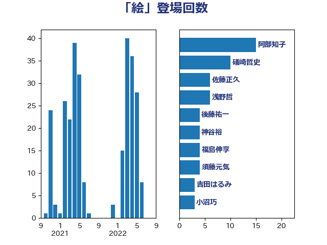

単語「絵」

| 阿部知子 | 立憲民主党 | 15 回 |
| 礒崎哲史 | 国民民主党 | 10 回 |
| 佐藤正久 | 自由民主党 | 6 回 |
| 浅野哲 | 国民民主党 | 6 回 |
| 後藤祐一 | 立憲民主党 | 4 回 |
| 神谷裕 | 立憲民主党 | 4 回 |
| 福島伸享 | 無所属 | 4 回 |
| 須藤元気 | 無所属 | 4 回 |
| 吉田はるみ | 立憲民主党 | 3 回 |
| 小沼巧 | 立憲民主党 | 3 回 |
| 小西洋之 | 立憲民主党 | 3 回 |
| 山井和則 | 立憲民主党 | 3 回 |
| 川田龍平 | 立憲民主党 | 3 回 |
| 池下卓 | 日本維新の会 | 3 回 |
| 田村憲久 | 自由民主党 | 3 回 |
| 田村貴昭 | 日本共産党 | 3 回 |
| 五十嵐清 | 自由民主党 | 2 回 |
| 伊藤孝恵 | 国民民主党 | 2 回 |
| 吉良よし子 | 日本共産党 | 2 回 |
| 土田慎 | 自由民主党 | 2 回 |
| 安達澄 | 無所属 | 2 回 |
| 宮本徹 | 日本共産党 | 2 回 |
| 山崎誠 | 立憲民主党 | 2 回 |
| 平山佐知子 | 無所属 | 2 回 |
| 早稲田ゆき | 立憲民主党 | 2 回 |
| 枝野幸男 | 立憲民主党 | 2 回 |
| 森本真治 | 立憲民主党 | 2 回 |
| 櫻井周 | 立憲民主党 | 2 回 |
| 浜口誠 | 国民民主党 | 2 回 |
| 浮島智子 | 公明党 | 2 回 |
| 滝波宏文 | 自由民主党 | 2 回 |
| 牧義夫 | 立憲民主党 | 2 回 |
| 玉木雄一郎 | 国民民主党 | 2 回 |
| 田中健 | 国民民主党 | 2 回 |
| 竹谷とし子 | 公明党 | 2 回 |
| 舟山康江 | 国民民主党 | 2 回 |
| 菅直人 | 立憲民主党 | 2 回 |
| 足立康史 | 日本維新の会 | 2 回 |
| 高橋千鶴子 | 日本共産党 | 2 回 |
| 麻生太郎 | 自由民主党 | 2 回 |
| 三浦信祐 | 公明党 | 1 回 |
| 下村博文 | 自由民主党 | 1 回 |
| 下野六太 | 公明党 | 1 回 |
| 串田誠一 | 日本維新の会 | 1 回 |
| 伊波洋一 | 無所属 | 1 回 |
| 伊藤孝江 | 公明党 | 1 回 |
| 伊藤岳 | 日本共産党 | 1 回 |
| 倉林明子 | 日本共産党 | 1 回 |
| 務台俊介 | 自由民主党 | 1 回 |
| 北神圭朗 | 無所属 | 1 回 |
| 古川元久 | 国民民主党 | 1 回 |
| 吉田豊史 | 日本維新の会 | 1 回 |
| 國重徹 | 公明党 | 1 回 |
| 堤かなめ | 立憲民主党 | 1 回 |
| 塩田博昭 | 公明党 | 1 回 |
| 大塚耕平 | 国民民主党 | 1 回 |
| 大西健介 | 立憲民主党 | 1 回 |
| 奥下剛光 | 日本維新の会 | 1 回 |
| 奥野総一郎 | 立憲民主党 | 1 回 |
| 安江伸夫 | 公明党 | 1 回 |
| 小池晃 | 日本共産党 | 1 回 |
| 尾身朝子 | 自由民主党 | 1 回 |
| 山本香苗 | 公明党 | 1 回 |
| 山添拓 | 日本共産党 | 1 回 |
| 山田宏 | 自由民主党 | 1 回 |
| 岡本あき子 | 立憲民主党 | 1 回 |
| 岡本三成 | 公明党 | 1 回 |
| 斎藤嘉隆 | 立憲民主党 | 1 回 |
| 本田顕子 | 自由民主党 | 1 回 |
| 杉久武 | 公明党 | 1 回 |
| 杉尾秀哉 | 立憲民主党 | 1 回 |
| 杉本和巳 | 日本維新の会 | 1 回 |
| 柚木道義 | 立憲民主党 | 1 回 |
| 柴田巧 | 日本維新の会 | 1 回 |
| 横沢高徳 | 立憲民主党 | 1 回 |
| 水岡俊一 | 立憲民主党 | 1 回 |
| 浅川義治 | 日本維新の会 | 1 回 |
| 浜地雅一 | 公明党 | 1 回 |
| 浦野靖人 | 日本維新の会 | 1 回 |
| 渡辺創 | 立憲民主党 | 1 回 |
| 熊谷裕人 | 立憲民主党 | 1 回 |
| 片山大介 | 日本維新の会 | 1 回 |
| 田名部匡代 | 立憲民主党 | 1 回 |
| 畦元将吾 | 自由民主党 | 1 回 |
| 石井章 | 日本維新の会 | 1 回 |
| 石原宏高 | 自由民主党 | 1 回 |
| 石垣のりこ | 立憲民主党 | 1 回 |
| 石川博崇 | 公明党 | 1 回 |
| 稲富修二 | 立憲民主党 | 1 回 |
| 緑川貴士 | 立憲民主党 | 1 回 |
| 自見はなこ | 自由民主党 | 1 回 |
| 舩後靖彦 | れいわ新選組 | 1 回 |
| 菅義偉 | 自由民主党 | 1 回 |
| 落合貴之 | 立憲民主党 | 1 回 |
| 藤巻健太 | 日本維新の会 | 1 回 |
| 西村智奈美 | 立憲民主党 | 1 回 |
| 進藤金日子 | 自由民主党 | 1 回 |
| 遠藤良太 | 日本維新の会 | 1 回 |
| 野上浩太郎 | 自由民主党 | 1 回 |
| 野田聖子 | 自由民主党 | 1 回 |
| 鈴木俊一 | 自由民主党 | 1 回 |
| 鈴木義弘 | 国民民主党 | 1 回 |
| 鎌田さゆり | 立憲民主党 | 1 回 |
| 長友慎治 | 国民民主党 | 1 回 |
| 長谷川岳 | 自由民主党 | 1 回 |
| 長谷川淳二 | 自由民主党 | 1 回 |
| 阿部司 | 日本維新の会 | 1 回 |
| 阿部弘樹 | 日本維新の会 | 1 回 |
| 青山大人 | 立憲民主党 | 1 回 |
| 高木かおり | 日本維新の会 | 1 回 |
| 高木啓 | 自由民主党 | 1 回 |